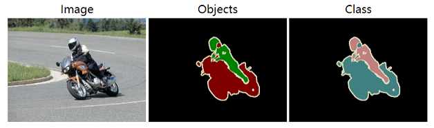

图像分割任务
为了制定图像分割任务数据集描述文件的模板，我们对主流的图像分割任务数据集进行了调研，与分类任务和检测任务不同的是，图像分割任务通常分为语义分割、实例分割、全景分割三个子任务，我们会分子任务讨论其目的和常见标注信息所包含的字段，从中整理出共享字段和独立字段，并在此基础上制定三个子任务数的据集描述文件的通用模板。
1. 任务调研
1.1 任务定义
图像分割任务是指通过对图片中每个像素进行语义标注，根据其标注的目标的轻微不同，可以分为三个子任务：
-
语义分割：即最基本的图像分割，将图像中每个像素的语义类别标注出来；
-
实例分割：只关注可数物体（如人，车等）的图像分割，将图片中的不同实例都区分标注出来；
-
全景分割：语义分割和实例分割的综合，通常在自动驾驶领域中出现，其将物体分为可数物体（things，比如人，猫，车等等）和不可数物体（stuff，比如天空，马路等等），对于可数物体标注语义和实例，对于不可数物体，则只标注语义；
三种图像分割的可视化结果如下图所示 ( 图片取自CVPR2019的论文: Panoptic Segmentation )：

1.2 评价指标：
图像分割三种子任务的评价指标略有不同，具体如下：
1.2.1 语义分割
语义分割的评价标准一般采用mIoU（mean Intersection over Union，即预测区域与真值之间的交集并集的比例）和mPA（mean Pixel Accuracy，即正确分类的像素与全部像素的比例），与检测不同，语义分割的mIoU更多是计算不规则区域，而非矩形框之间。
这里为方便计算，假定一定有k+1类（包括k个目标类和1个背景类），p_{ij}表示本属于i类却预测为j类的像素点总数，具体地，p_{ii}表示true postives，p_{ij}表示false positives，p_{ji}表示false negatives; 则mIoU和mPA的计算公式如下所示：
- mIoU
- mPA
1.2.2 实例分割
实例分割的评价标准通常和目标检测相同，采用mAP作为评价标准，但是其中的mIoU计算方式为预测mask和真值mask之间的IoU，而非在检测中预测框和真值检测框之间的IoU，关于检测中mAP的计算方式参考目标检测任务调研报告。
1.2.3 全景分割
全景分割采用一种新的评价标准，既考虑到things，也考虑到了stuff，即Panoptic Quality（PQ），计算PQ有两个步骤：
-
分割匹配：当且仅当预测区域和真值区域的交并比（IoU）大于0.5时，认为二者匹配；（结合全景分割的非重叠性我们可以推论，每个真值区域最多可以有一个预测区域匹配。）
-
PQ计算：当分割匹配完成后，每一个分割预测可能有三种情况: TP (正确匹配的分割对), FP (未匹配的预测结果), and FN (未匹配的真值区域). 给定 TP, FP, 和 FN, 每个类别的PQ可以通过下面公式计算:
PQ同时也可以看成是segmentation quality (SQ) 和 recognition quality (RQ)的乘积：
关于PQ计算公式的更多信息，可以参考原论文Panoptic Segmentation.
1.3 主流数据集调研：
我们调研了主流的图像分割数据集，其中包含了COCO、VOC、CityScapes、ADE20K等常见数据集。考虑到有些数据集同时包含了不同的分割子任务，这里对三个子任务进行了拆分，且每个子任务下只考虑和他相关的标注内容。此外，调研过程会遇到一些名称不同，但是实际含义相同或类似的字段，这些字段我们也视为同一字段，并在这里统一去称呼，比如image_id表示图片的唯一表示，有时候也会用图片路径来表示，category_id同时也包含category_name的含义。最后，考虑到图像分割特有的分割图(segmentation_map, 即图片形式对原图进行标注，每个位置的像素值都是原图对应位置的标注信息)标注形式，category_id有时候没有显式的标注出来，而是根据分割图中的像素值通过一定的关系计算得到，因此我们具象化了一个不存的的字段pixel_mapping，用来描述从像素值到实际的label_id和instance_id的映射关系，这个字段被加上了*以示区别，并且这个字段将和segmentation_map字段绑定出现（有些像素值等于label_id或者instance_id的，可以认为映射关系是恒等映射）。
1.3.1 语义分割数据集调研
我们调研了VOC，CityScapes和ADE20K三个数据集的语义分割任务，结果如下：
| 语义分割数据集 | 共享字段 | 独立字段 | |
|---|---|---|---|
| image_id | segmentation_map | pixel_mapping* | |
| VOC | Y | Y | Y |
| CityScapes | Y | Y | Y |
| ADE20K | Y | Y | Y |
上表中*即表示上文提到的假想字段（即实际有这个信息，但是不是通过标注文件的形式给出来的，下同），其他各个字段的含义如下表所示：
| 字段类型 | 字段名称 | 含义 |
|---|---|---|
| 共享字段 | image_id | 定位到唯一图片，比如用图片名或者图片路径表示 |
| segmentation_map | 分割图，语义分割任务就是语义分割mask | |
| 独立字段 | pixel_mapping* | 分割图中的像素值到语义id/实例id的映射关系 |
1.3.2 实例分割数据集调研
我们调研了VOC, COCO, CityScapes, ADE20K这四个数据集的实例分割任务，结果如下：
| 实例分割数据集 | 共享字段 | 独立字段 | |||||||||
|---|---|---|---|---|---|---|---|---|---|---|---|
| image_id | segmentation_map | pixel_mapping* | polygon/rle_polygon | category_id | instance_id | area | iscrowd | occluded | parts | scenes | |
| VOC | Y | Y | Y | ||||||||
| COCO | Y | Y | Y | Y | Y | Y | |||||
| CityScapes | Y | Y | Y | Y | Y | Y | |||||
| ADE20K | Y | Y | Y | Y | Y | Y | Y | Y | Y | ||
各个字段的含义如下表所示：
| 字段类型 | 字段名称 | 含义 |
|---|---|---|
| 共享字段 | image_id | 定位到唯一图片，比如用图片名或者图片路径表示 |
| 独立字段 | segmentation_map | 分割图中的像素值到语义id/实例id的映射关系 |
| pixel_mapping* | 分割图，语义分割任务就是语义分割mask | |
| polygon/rle_polygon | 单个对象的多边形标注的顶点坐标集合 | |
| category_id | 单个对象所属的类别id | |
| instance_id | 单个对象所属的实例id | |
| area | 单个对象的分割区域面积 | |
| iscrowd | 该对象是否为一组对象，比如一群人、一堆苹果等 | |
| occluded | 该对象是否被遮挡 | |
| parts | 部件信息，即该对象是否包含某个部件(part)，或者该对象是否是另一个对象的部件(part) | |
| scenes | 每张图片所属的场景类别 |
1.3.3 全景分割数据集调研
我们调研了COCO和CityScapes两个数据集的全景分割任务，结果如下：
| 实例分割数据集 | 共享字段 | 独立字段 | |||||||||
|---|---|---|---|---|---|---|---|---|---|---|---|
| image_id | segmentation_map | pixel_mapping* | polygon/rle_polygon | category_id | instance_id | area | iscrowd | bbox | isthing | supercategory | |
| COCO | Y | Y | Y | Y | Y | Y | Y | Y | Y | Y | Y |
| CityScapes | Y | Y | Y | Y | Y | Y | |||||
备注：这里isthing和supercategory都是类别域(class_domain)的描述字段，即这两个字段不是描述某一个标注的，而是描述某一个类别的。 各个字段的含义如下表所示：
| 字段类型 | 字段名称 | 含义 |
|---|---|---|
| 共享字段 | image_id | 定位到唯一图片，比如用图片名或者图片路径表示 |
| segmentation_map | 分割图中的像素值到语义id/实例id的映射关系 | |
| 独立字段 | pixel_mapping* | 分割图，语义分割任务就是语义分割mask |
| polygon/rle_polygon | 单个对象的多边形标注的顶点坐标集合 | |
| category_id | 单个对象所属的类别id | |
| instance_id | 单个对象所属的实例id | |
| area | 单个对象的分割区域面积 | |
| iscrowd | 该对象是否为一组对象，比如一群人、一堆苹果等 | |
| bbox | 物体的边界框 | |
| isthing | 是否是things，全景分割通常把目标分为things（可数，进行实例标注）和stuff（不可数，只进行语义标注） | |
| supercategory | 类别的父类别，比如类别"猫"的父类别可能是"动物" |
1.3.4 分割图segmentation_map调研
前文可以看出segmentation_map是图像分割中最主要的标注手段，但是不同数据集的segmentation_map却有不同的格式，这里主要调研segmentation_map及其对应的pixel_mapping的不同情况，方便制定segmentation_map的dsdl规范。
segmentation_map的常见情况有以下几种：
-
基本形式：
这种情况下，segmentation_map是单通道，其像素值是int类型，对于语义分割来说，segmentation_map的每个位置的像素就是这个位置的语义类别，对于实例分割来说，segmentation_map的每个位置就是这个位置的实例类别。voc数据集的语义分割和实例分割任务就是采用的这种方案：
-
通过某种映射得到语义类别或实例类别：
这种情况下，分割map可能是单通道也可能是多通道，而语义类别或者实例类别需要通过一定的关系进行计算，比如在CityScapes、ADE20K、COCO Panoptic中，都有这种计算关系：- CityScapes:
- AED20K:

- COCO Panoptic:

-
实例分割有多个分割map（一个实例一个map）:
有时候实例分割任务中，一张图片会提供多个实例map，每个实例一张map，map为单通道，且只有0，x两种像素，0表示这个位置为背景，x则表示这个位置是该实例，并且其语义类别为x，比如在ade20k中：
2. 模板展示
根据上面的调研，可以初步梳理出来分割任务标注类型的几种情况，大致的分类如下所示：

基于此可以进行模板制定。
2.1 segmentation_map规范
制定任务模板之前，首先需要规定分割图的模板，结合上面对分割图的调研，我们制定了两个分割图规范，以适应语义分割和实例分割两种任务类型（全景分割可以看成是两种任务的结合），具体的就是下面两种规范：
-
LabelMap: 即label map，用来表示语义map，LabelMap是一个单通道，int32类型的图片，且需要接受一个class domain参数，LabelMap的像素值即代表class domain中类别的索引，这样即可实现从像素到语义类别的映射；
-
InstanceMap: 即instance map，用来表示实例map，InstanceMap同样是一个单通道，int32类型的图片，矩阵中的元素用来表示实例的位置，语义信息则通过对应位置的LabelMap来获取（InstanceMap本身不需要class domain参数）；
这里LabelMap和InstanceMap都表示一个单通道图片，但是实际上为了减少标注文件的容量，也可以将图片保存下来，然后LabelMap和InstanceMap保存指向这个符合规范的图像文件的路径信息。
有了分割图的规范，我们可以进行三个分割任务的规范制定。
2.2 语义分割模板
由上面的梳理，可以知道语义分割的标注形式只有LabelMap的形式，且一张图片对应一张LabelMap，所以制定语义分割的模板如下：
SemanticSegmentationSample:
$def: struct
$params: ['cdom']
$fields:
image: Image
semantic_map: LabelMap[dom=$cdom]
2.3 实例分割模板
实例分割的标注形式通常有instance map和polygon两种，所以对应的实例分割模板制定如下：
- instance map类型：
InstanceSegmentationSample:
$def: struct
$params: ['cdom']
$fields:
image: Image
instance_map: InstanceMap
semantic_map: LabelMap[dom=$cdom]
- polygon类型：
LocalInstanceEntry:
$def: struct
$params: ['cdom']
$fields:
label: Label[dom=$cdom]
bbox: BBox
polygon: Polygon
InstanceSegmentationSample:
$def: struct
$params: ['cdom']
$fields:
image: Image
instances: List[LocalInstanceEntry[cdom=$cdom]]
2.4 全景分割模板
和实例分割类似，全景分割当中的实例信息也可以通过两种方式给出，这里分别给出其模板定义：
- 实例信息通过instance map给出：
PanopticSegmentationSample:
$def: struct
$params: ['cdom']
$fields:
image: Image
instance_map: InstanceMap
semantic_map: LabelMap[dom=$cdom]
- 实例信息通过polygon给出：
LocalInstanceEntry:
$def: struct
$params: ['cdom']
$fields:
label: Label[dom=$cdom]
bbox: BBox
polygon: Polygon
InstanceSegmentationSample:
$def: struct
$params: ['cdom']
$fields:
image: Image
semantic_map: LabelMap[cdom=$cdom]
instances: List[LocalInstanceEntry[cdom=$cdom]]
此外，全景分割由于对类别有things和stuff的区分，所以需要对class domain进行补充说明，这里我们通过父类别来说明类别是things还是stuff：
如下所示：
$dsdl-version: "0.5.0"
COCOClassDom[ThingsorStuff]:
$def: class_domain
classes:
- sky[stuff]
- horse[things]
- person[things]
- bottle[things]
- ...
ThingsorStuff:
$def: class_domain
classes:
- things
- stuff
$dsdl-version: "0.5.0"
COCOClassDom[COCOParentDom, ThingsorStuff]:
$def: class_domain
classes:
- sky[][stuff] # 如果没有对应的父类别则用空括号表示
- horse[animal][things]
- person[animal][things]
- bottle[][things]
- ...
COCOParentDom:
$def: class_domain
classes:
- animal
- food
- ...
ThingsorStuff:
$def: class_domain
classes:
- things
- stuff